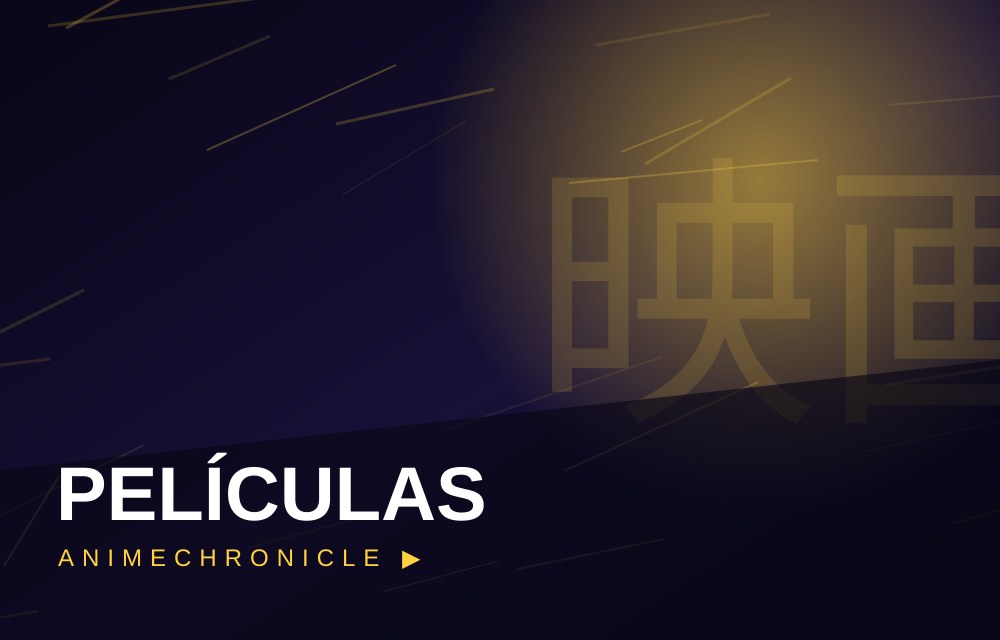

La nueva serie de fantasía que entierra a los mejores animes de 2026: acaba de empezar y es un éxito en streaming

La nueva serie de fantasía que entierra a los mejores animes de 2026: acaba de empezar y es un éxito en streaming Vandal
La nueva serie de fantasía que entierra a los mejores animes de 2026: acaba de empezar y es un éxito en streaming Vandal